Exposure & Sensing
What challenges balance and how change is detected.
A&S research spans Exposome, Olfactory Science, Stress, Neuroplasticity, Skin Biology and Hair Follicle Function—revealing how these interconnected systems shape the body’s ability to sense change, respond to challenges and adapt over time.
Although each research domain begins from a different scientific perspective, they ultimately converge on one fundamental goal: understanding and supporting Homeostasis—the dynamic balance underlying health, resilience, longevity and well-being.
A&S studies how the Personal Exposome interacts with sensory, neural, immune, endocrine, metabolic and peripheral systems—and how these interconnected pathways shape adaptation, resilience and long-term well-being.
What challenges balance and how change is detected.
How the body responds, regulates and restores balance.
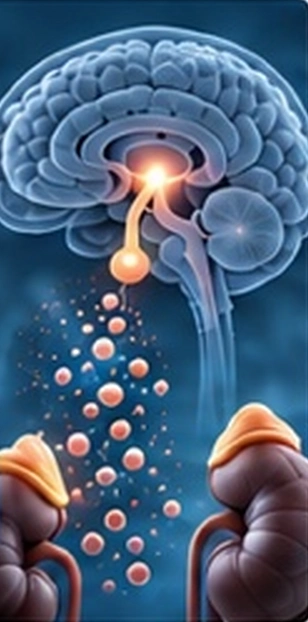
How maintained or disrupted balance shapes tissues over time.
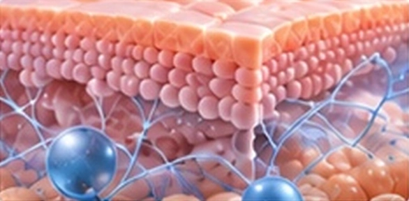
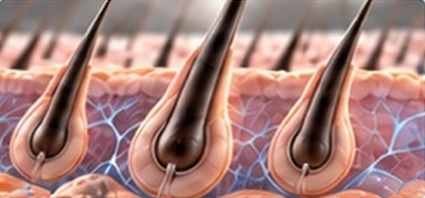
Integrated Sensing & Signal Network
Homeostasis is sustained through continuous, bidirectional communication among neural, endocrine, immune, metabolic, cellular, skin and hair systems. The brain and hypothalamus integrate these signals and coordinate adaptive responses, while supportive modulators and cumulative allostatic load influence whether balance is maintained or disrupted.
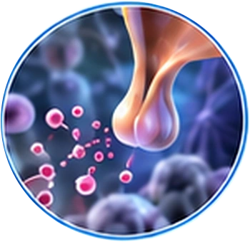
Hormones · Neuropeptides
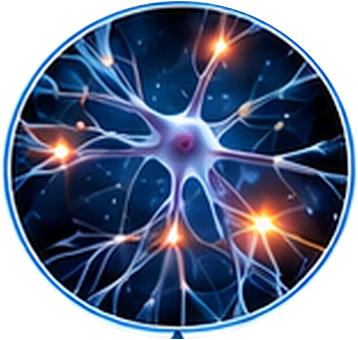
Sympathetic · Parasympathetic
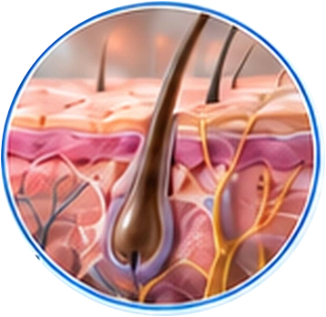
Neurosensory Input · Barrier · Follicle Signaling
Bidirectional Communication
Cytokines · Danger Signals
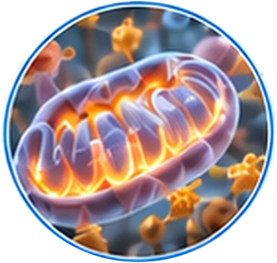
Glucose · Lipids · Energy
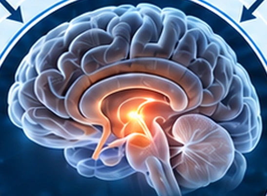
Central Integration · HPA Axis Control
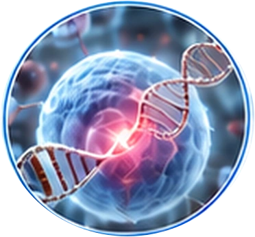
ROS/RNS Balance · DNA Repair · Autophagy
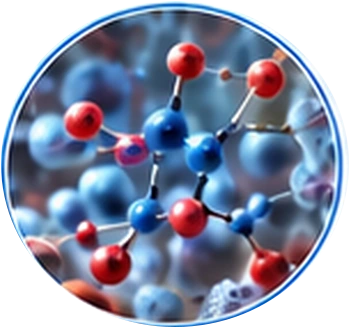
Detox Systems · Antioxidant Defense
Coordinated Regulation
Support Adaptive Capacity
Dynamic Balance · Adaptive Regulation
Recovery · Resilience
Can Overwhelm Adaptive Capacity
Homeostasis & Health Outcomes
Homeostasis continuously regulates, recovers and adapts—supporting resilience when maintained and driving systemic dysfunction when disrupted.
Adaptive Balance & Resilience
Clear Cognition · Emotional Balance
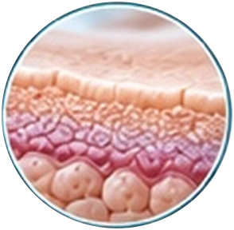
Strong Barrier · Hydration & Elasticity
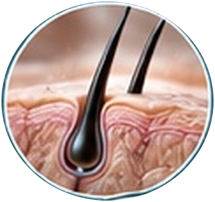
Healthy Growth Cycle · Strong Follicles
Efficient Energy · Stable Glucose & Lipids
Balanced Inflammation · Strong Defense
Adaptability · Recovery · Longevity
Health · Longevity · Well-Being
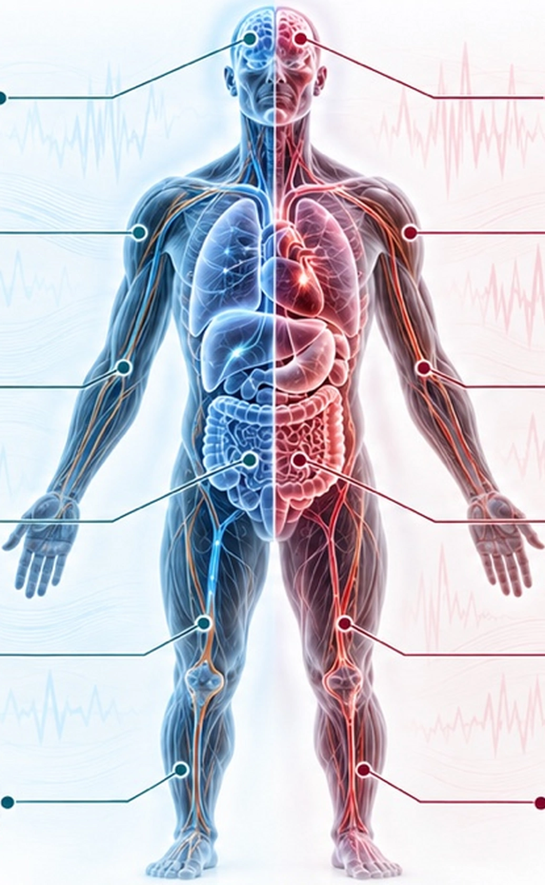
Dynamic Balance · Adaptive Regulation · Recovery · Resilience
Allostatic Load & Systemic Dysregulation
Poor Focus · Mood Disruption
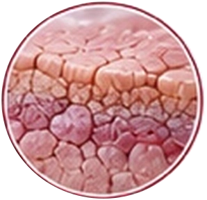
Barrier Breakdown · Dryness & Sensitivity
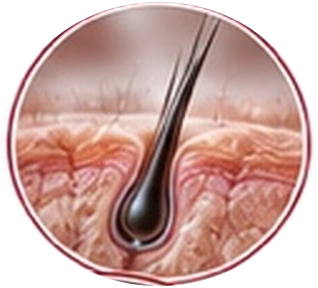
Hair Loss · Weak Follicles
Fatigue · Poor Glucose Control
Persistent Inflammation · Weakened Immunity
Lower Resilience · Slower Recovery
Disease Risk · Functional Decline · Reduced Quality of Life